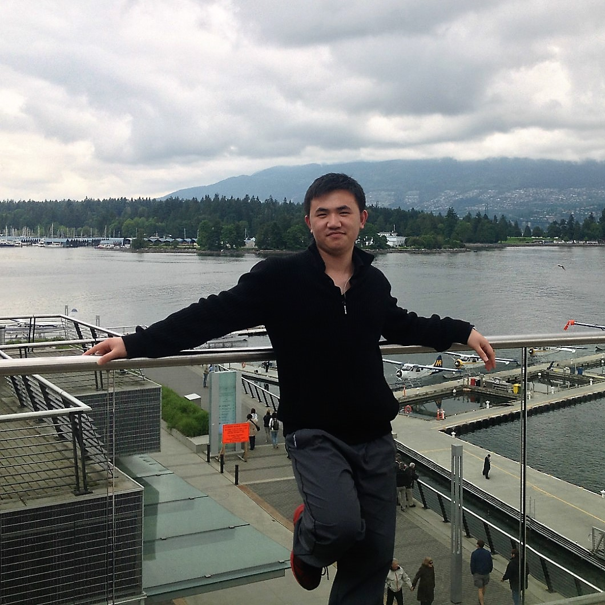

About me

Qing received his Ph.D. degree in computer application technology from the School of Computer Science and Technology, Tianjin University under the supervise of Prof. Wei Feng and Prof. Bin Wu. He is currently a Wallenberg-NTU Presidential Postdoctoral Fellow with the Nanyang Technological University. His research interests are video object tracking, image denoising, image segmentation, and other related vision problems.
tsingqguo [at] gmail [dot] com


News
- ABBA, the first motion-based adversarial blur attack, has been accepted to NeurIPS 2020.
- Four papers, DeepRhythm, Amora, FakePolisher and DeepSonar, have been accepted to ACM Multimedia 2020.
- SPARK, one of the first tracking attacks, has been accepted to ECCV2020.
- I awarded the NTU Presidential Postdoctoral Fellowship.
- Selective Spatial Regularization for CF tracking has been accepted to IEEE TIP.
- Saliency-aware Regularization for CF tracking has been accepted to IEEE TIP.
- We achieved the best paper award of ICME 2018.
- One paper was accepted to PRICAI 2018.
- Two papers were accepted to ICME 2018.
- Results on OTB-100 of DSiam were added.
- Some missing files of DSiam were added.
- The code of DSiam was added.
- The project page of DSiam was added.
- I obtained the National Graduate Fellowship 2017.
Selected Publications
See the full list at Google Scholar.
§: equal contribution to the first author. *: corresponding author.

- Watch out! Motion is Blurring the Vision of Your Deep Neural Networks
Qing Guo, Felix Juefei-Xu, Xiaofei Xie, Lei Ma, Jian Wang, Bing Yu, Wei Feng, Yang Liu
NeurIPS 2020 (CCF-A)
[paper, code]

- SPARK: Spatial-aware Online Incremental Attack Against Visual Tracking
Qing Guo, Xiaofei Xie, Felix Juefei-Xu, Lei Ma, Zhongguo Li, Wanli Xue, Wei Feng, Yang Liu
ECCV 2020
[paper, code]

- DeepRhythm: Exposing DeepFakes with Attentional Visual Heartbeat Rhythms
Hua Qi, Qing Guo§, Felix Juefei-Xu, Xiaofei Xie, Lei Ma, Wei Feng, Yang Liu, Jianjun Zhao
accepcted to ACM Multimedia 2020(CCF-A).
[paper, code]

- Amora: Black-box Adversarial Morphing Attack
Run Wang, Felix Juefei-Xu, Qing Guo*, Yihao Huang, Xiaofei Xie, Lei Ma, Yang Liu
accepcted to ACM Multimedia 2020 (CCF-A).
[paper, code]

- DeepSonar: Towards Effective and Robust Detection of AI-Synthesized Fake Voices
Run Wang, Felix Juefei-Xu, Yihao Huang,Qing Guo *, Xiaofei Xie, Lei Ma, Yang Liu
accepcted to ACM Multimedia 2020 (CCF-A).
[paper, code]

- FakePolisher: Making DeepFakes More Detection-Evasive by Shallow Reconstruction
Yihao Huang, Felix Juefei-Xu, Run Wang, Qing Guo, Lei Ma, Xiaofei Xie, Jianwei Li, Weikai Miao, Yang Liu, and Geguang Pu
accepcted to ACM Multimedia 2020 (CCF-A).
[paper, code]

- Selective Spatial Regularization by Reinforcement Learned Decision Making for Object Tracking.
Qing Guo, Ruize Han, Wei Feng, Zhihao Chen, and Liang Wan
IEEE Transcations on Image Processing, 2020, 29(7): 2999 - 3013. (CCF-A)
[project]

- Dynamic Saliency-Aware Regularization for Correlation Filter-Based Object Tracking
Wei Feng, Ruize Han, Qing Guo*, Jianke Zhu, and Song Wang.
IEEE Transactions on Image Processing, 2019, 28(7): 3232 - 3245. (CCF-A)
[project]

- Learning Dynamic Siamese Network for Visual Object Tracking
Qing Guo, Wei Feng, Ce Zhou, Rui Huang, Liang Wan, and Song Wang
ICCV 2017. (CCF-A)
[project]

- Structure-Regularized Compressive Tracking with Online Data-Driven Sampling
Qing Guo, Wei Feng, Ce Zhou, and Bin Wu
IEEE Transactions on Image Processing, 2017, 26(12): 5692-5705. (CCF-A)
[paper]
- Structure-Regularized Compressive Tracking
Qing Guo, Wei Feng, Ce Zhou, and Bin Wu
In ICME2018. (CCF-B, Oral)
[pdf]

- Content-Related Spatial Regularization for Visual Object Tracking
Ruize Han, Qing Guo §, and Wei Feng
In ICME 2018 (CCF-B, Oral, Best Paper Award).
[project]

- Freqeuncy-tuned Active Contour Model
Qing Guo, Shuifa Sun, Xuhong Ren, Fangmin Dong, Bruce Z. Gao, and Wei Feng
Neurocomputing, 2018, 275(31): 2307-2316.
- Freqeuncy-tuned Active Contour Model for Biomedical image segmentation
Qing Guo, Shuifa Sun, Fangmin Dong, Wei Feng, Siyu Ma, and Bruce Z. Gao
ICASSP 2017 (CCF-B, Oral)
[project]

- Fast Spatially-Regularized Correlation Filters for Visual Object Tracking
Pengyu Zhang, Qing Guo §, and Wei Feng
In PRICAI 2018. (CCF-C)
[project]

- Background-Suppressed Correlation Filters for Visual Tracking
Zhihao Chen, Qing Guo §, Liang Wan, and Wei Feng
In ICME 2018 .(CCF-B)
[project]

- Selective Object and Context Tracking
Ce Zhou, Qing Guo*, Li Wang, and Wei Feng
In ICASSP 2017.(CCF-B)
[pdf]

- Image Denosing Algorithm Based on Contourlet Transform for Optical Coherence Tomography Heart Tube Image
Qing Guo, Fangmin Dong, Shuifa Sun, Bangjun Lei, and Zhi Gao
IET Image Processing, 2013, 7(5): 442-450.
[pdf]
- Optical Coherence Tomography Heart Tube Image Denoising Based on Contourlet Transform
Qing Guo, Shuifa Sun, Fangmin Dong, Zhi Gao, and Rui Wang
In ICMLC, 2012, (3):1139-1144. (Oral)
[pdf]

- Improved Rotating Kernel Transformation Based Contourlet Domain Image Denoising Framework
Qing Guo, Fangmin Dong, Shuifa Sun, Xuhong Ren, Shiyu Feng, and Zhi Gao
2013 Pacific-Rim Conference on Multimedia (PCM), 2013, (8294):146-157. (CCF-C)
[pdf]
Academic Services
- Reviewer of IEEE Transactions on Pattern Analysis and Machine Intelligence (TPAMI)
- Reviewer of IEEE Transactions on Image Processing(TIP)
- Reviewer of IEEE Transactions on Information Forensics & Security (TIFS)
- Reviewer of Journal of Visual Communication and Image Representation (JVCI)
- Reviewer of Pattern Recognition Letters
- Reviewer of Neural Processing Letters
- Reviewer of Information Sciences
- Reviewer of Neurocomputing
- Reviewer of IEEE Access
- Reviewer of IET Image Processing
- Reviewer of Electronic Letters
- Reviewing for ICCV, CVPR,ECCV, AAAI, IJCAI
Adwards
- 2019 NTU Presidential Postdoctoral Fellowship
- 2019 Excellent Doctor Dissertation of Tianjin University
- 2018 China State Shipbuilding Corporation (CSSC) Scholarship
- 2017 National Graduate Fellowship
- 2015 Excellent Master Dissertation of Hubei province
- 2013 National Graduate Fellowship
- Third prize of the 5th computer simulation contest of China
- 2011 Outstanding graduates of Hebei Province